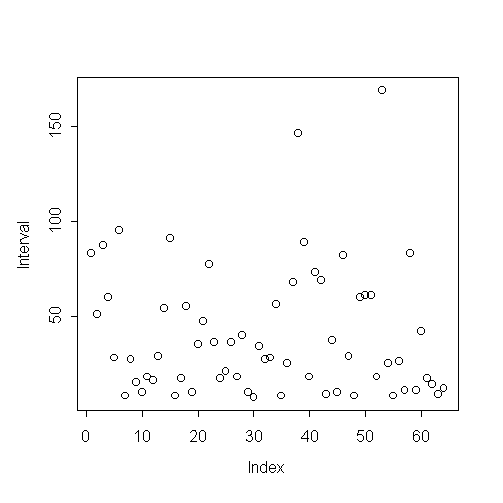
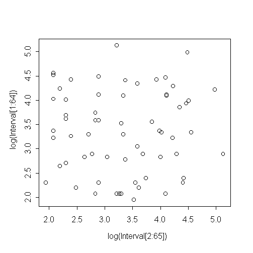
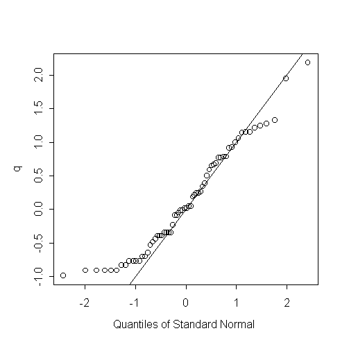

| / Home |
Keywords: Poisson process, exponential distribution
The ocean swell produces spectacular eruptions of water through a hole in the cliff at Kiama, about 120km south of Sydney, known as the Blowhole. The times at which 65 successive eruptions occurred from 1340 hours on 12 July 1998 were observed using a digital watch.
Jim Irish writes
Anyone who has visited the Blowhole more than once knows that the rate and volume of eruptions varies. This variation occurs at several timescales. We might expect that part is explained by the tides, so that eruptions are more frequent and spectacular when the tide is very high, and eruptions obviously depend on the presence of a large ocean swell generated by prolonged strong winds over the ocean well offshore from Kiama. Hence, any stochastic model fitted to data observed over a short period of time is only applicable to that period, and perhaps a few hours either side of the observations. But we might infer from the model fitted to those data that a similar model applies more generally.
| Variable | Description | ||
| Interval | Waiting time between eruptions (seconds) | ||
Data file (tab-delimited text)
| The data was collected and contributed by Jim Irish, Faculty of Engineering, University of Technology, Sydney. |
|  | There is no clear trend over time. |
|  | There is no evidence of correlation between successive waiting times. |
Do eruptions arise according to a Poisson process? If so the waiting times should be exponentially distributed, and the variance should be equal to the square of the mean. The sample variance is actually smaller than exponential variance would suggest:
> mean(Interval) [1] 39.82812 > var(Interval) [1] 1139.097 > mean(Interval)^2 [1] 1586.28
If the waiting times are exponential, then p should be uniformly distributed and q should be standard normal:
> m <- mean(Interval) > p <- 1-exp(-Interval/m) > q <- qnorm(p) > qqnorm(q) > abline(0,1)
|  | The upper tail of the waiting time distribution is similar to exponential, but the short
waiting times are not short enough. It could be that two eruptions arriving in very close succession are indistinguishable from a single longer eruption. This might explain the short lower tail. |
|
Home - About Us -
Contact Us Copyright © Gordon Smyth |